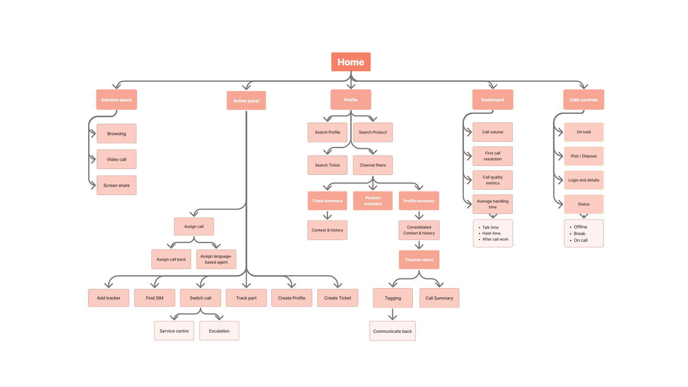
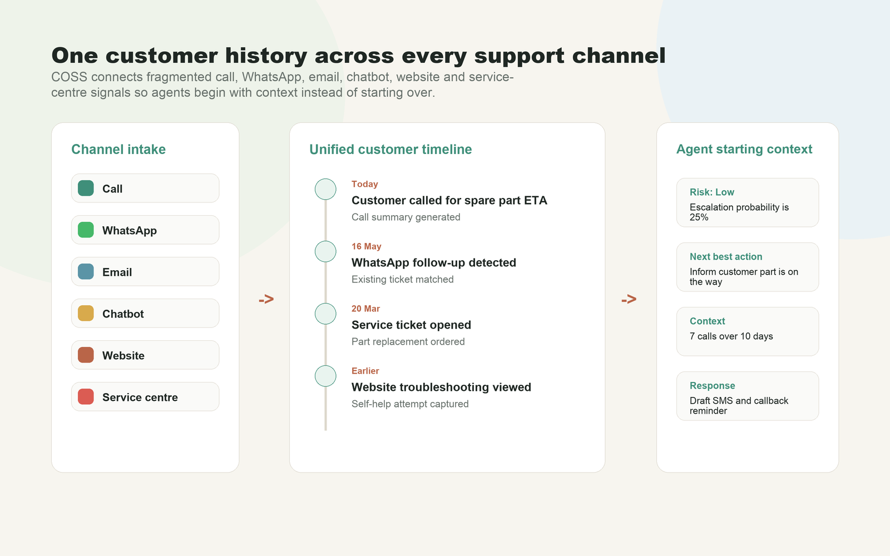

Graduation Project · Samsung R&D Institute – Delhi
Designing an AI-Assisted Customer Support Platform
Reimagining enterprise customer support by helping agents navigate fragmented systems with contextual AI assistance.
Customer support agents operate in highly complex environments where resolving a single issue often requires navigating multiple disconnected applications, searching extensive knowledge bases, and documenting every interaction—all while maintaining fast, empathetic conversations with customers.
This project explores how Generative AI can augment—not replace—human expertise by reducing cognitive load, surfacing relevant information at the right time, and streamlining repetitive workflows across the support experience.
AI-Assisted Customer Support Platform
Unified Customer Workspace
AI Recommendations
Omnichannel Timeline
Project Snapshot
- Role
- UX / Product Designer
- Duration
- 4 Months
- Organization
- Samsung R&D Institute – Delhi
- Domain
- Enterprise UX • Customer Experience • Generative AI
- Methods
- Ethnographic Research Contextual Inquiry Journey Mapping Service Design Interaction Design
- Deliverables
- UX Strategy AI Experience Design Information Architecture Wireframes High-Fidelity Prototype
My Contribution
- Planned and conducted end-to-end UX research.
- Performed contextual inquiry inside a live customer support centre.
- Audited Samsung's internal customer support ecosystem.
- Synthesized research into product opportunities.
- Designed an AI-assisted enterprise support experience from concept to high-fidelity prototype.
The Challenge
Supporting Customers Shouldn't Mean Managing Systems
Modern customer support extends far beyond answering phone calls.
Agents are expected to understand customer history, identify products, retrieve troubleshooting information, coordinate with service centres, communicate across multiple channels, and document every interaction—all within a single conversation.
However, the existing support experience depended on multiple disconnected internal systems. Information was fragmented, workflows were repetitive, and agents spent considerable effort gathering context before they could begin solving customer problems.
As Generative AI matured, this presented an opportunity to rethink how support systems could assist agents—not by replacing human expertise, but by augmenting it with timely, contextual intelligence.
Customer
Support Agent
Reduce Cognitive Load
Decrease the effort required to gather information during live customer interactions.
Unify Information
Bring together fragmented customer context, product information and support history into a cohesive experience.
Augment Human Decision-Making
Use AI to assist agents with recommendations, summaries and knowledge retrieval while keeping humans in control.
Understanding the Problem.
Understanding the Support Ecosystem
Before conducting field research, I mapped the customer support ecosystem to understand how customers, agents, internal tools, and service teams interacted throughout the support journey.
The Support Ecosystem
Resolving a customer issue extends beyond a single support application. Agents interact with multiple systems to access customer history, product information, troubleshooting guides, service requests, and communication records. Each platform contributes part of the information required to deliver an effective resolution.
Customer
Support Channels
Customer Support Agent
Internal Support Systems
Service Centre
Resolution
Information is Distributed Across Multiple Systems
Different systems contributed different layers of context, creating a fragmented picture of the customer and their issue.
Customer Records
- Customer profile
- Previous interactions
- Product ownership
Knowledge Base
- Troubleshooting guides
- Policies
- Internal documentation
Product Database
- Product specifications
- Model information
- Warranty details
Service Management
- Repair status
- Service requests
- Technician updates
Communication Channels
- Calls
- Chat
- Messaging platforms
Each application serves a specific purpose, requiring agents to move between systems to gather enough context for a single customer interaction.
High-Level Support Journey
The main friction appears in the middle of the support flow, where agents must gather and validate fragmented information before resolution.
Customer raises issue
Support channel
Agent receives request
Information gathering
Resolution
Follow-up
Most effort is spent collecting and validating information rather than solving the customer's problem.
Next → Understanding the people behind the workflow
Research Methodology
Rather than designing around assumptions, I immersed myself in the customer support environment to understand how agents actually worked, collaborated, and resolved customer issues.
To uncover the root causes behind inefficient support workflows, I combined ethnographic research, contextual inquiry, stakeholder interviews, workflow observation, and application analysis. This helped me understand both the visible workflow and the hidden operational challenges that agents experienced every day.
Research Approach
Ethnographic Research
Spent time inside a Samsung customer support centre observing real working environments.
Contextual Inquiry
Interviewed agents while they handled live customer interactions to understand decisions and behaviours.
Workflow Observation
Studied navigation patterns, task switching, communication flow, and information retrieval.
Stakeholder Discussions
Validated operational challenges with managers and domain experts.
Application Audit
Analyzed internal support tools, knowledge bases, and customer management systems.
Field Study
Customer Support Centre
Live Support Calls
Customer Support Agents
- Observation
- Interviews
- Contextual Inquiry
- Application Walkthroughs
Approximately
1 Week
Research Focus
Agent Behaviour
How agents navigate systems and make decisions.
Workflow Efficiency
Where time and effort are spent during support calls.
Information Flow
How customer information moves across multiple applications.
AI Opportunities
Where Generative AI could reduce repetitive effort without disrupting existing workflows.
Questions That Guided The Research
Understanding Current Workflows
How does an agent resolve a customer issue from start to finish?
Pain Points
Which tasks consume the most time or create unnecessary effort?
Information Needs
What information is difficult to find during a live interaction?
Future Opportunities
Where could AI provide meaningful assistance without replacing human judgement?
Next → Insights from the Field
Insights from the Field
After observing live customer support operations and speaking with agents, several recurring patterns emerged. These insights became the foundation for every design decision that followed.
What We Observed
Fragmented Information
Customer information was scattered across multiple internal applications.
Design Implication
Create a unified workspace with contextual information.
Context Switching
Agents constantly switched between applications while helping customers.
Design Implication
Reduce navigation and surface information proactively.
Manual Documentation
Agents repeatedly typed summaries, notes and ticket updates after every interaction.
Design Implication
Use AI-assisted summarization and automatic note generation.
Knowledge Retrieval
Finding the correct troubleshooting information often interrupted conversations.
Design Implication
Context-aware AI recommendations from the knowledge base.
New Agent Learning Curve
New agents relied heavily on senior colleagues and internal documentation.
Design Implication
Provide guided workflows and contextual assistance.
Disconnected Channels
Customer history was fragmented across calls, emails and messaging platforms.
Design Implication
Create an omnichannel customer timeline.
Research Highlights
15+
Agents Interviewed
25–30
Live Calls Observed
4+
Applications Used Simultaneously
8 Minutes
Average Call Duration
60 Seconds
Typical Hold Time
85%
First Call Resolution
Key Takeaways
Agents spend more time finding information than solving customer problems.
The biggest opportunity is reducing cognitive load rather than automating entire conversations.
AI should proactively surface information instead of waiting for user prompts.
Support workflows should remain familiar while reducing unnecessary complexity.
Customers experience one support journey, even though agents work across many disconnected systems.
Next → Defining the Opportunity
Defining the Opportunity
The research uncovered many usability issues, but not all of them required AI. The next step was identifying where Generative AI could genuinely reduce effort while preserving human decision-making.
From Insight to Opportunity
| Research Insight | Opportunity | Design Response |
|---|---|---|
| Customer information is scattered across multiple systems. | Reduce information fragmentation. | Unified customer workspace with contextual information. |
| Agents repeatedly search documentation during live calls. | Surface relevant knowledge automatically. | Context-aware AI recommendations. |
| Documentation consumes significant time after every interaction. | Reduce repetitive manual work. | AI-generated summaries and ticket updates. |
| Customer history is fragmented across channels. | Provide complete interaction history. | Unified omnichannel customer timeline. |
| New agents require constant support. | Lower onboarding effort. | Guided workflows and AI assistance. |
Where AI Creates Value
Understand
- Speech-to-text
- Intent recognition
- Conversation understanding
Retrieve
- Knowledge search
- Customer history
- Relevant documentation
Recommend
- Troubleshooting steps
- Suggested responses
- Next best actions
Automate
- Summaries
- Tags
- Notes
- Follow-up actions
Design Principles
Reduce Cognitive Load
Only surface the most relevant information when it is needed.
Keep Humans in Control
AI assists decisions rather than replacing them.
Minimize Context Switching
Bring information together instead of moving users between systems.
Support Existing Mental Models
Improve familiar workflows instead of introducing entirely new ones.
AI Should Be Contextual
Recommendations should always relate to the current customer conversation.
Next → Introducing the Solution
Introducing the Solution
The research revealed that agents didn't need another application—they needed a smarter way to work across the tools they already used. The solution introduces an AI-powered assistance layer that brings fragmented information together while keeping agents in control.
AI-Assisted Customer Support Platform
Displays customer profile, products, tickets and history in one place.
Provides contextual recommendations, summaries and troubleshooting guidance.
Consolidates customer interactions across calls, chat, email and service requests.
How the Experience Works
Core Experience
Unified Customer Profile
Everything about the customer in one place.
Conversation Intelligence
Speech-to-text and contextual understanding.
AI Knowledge Assistant
Relevant troubleshooting recommendations.
Omnichannel Timeline
History from every support channel.
Smart Documentation
Automatic summaries, notes and ticket updates.
Action Centre
Quick actions without leaving the current workflow.
Information Architecture
Customer Profile
- Products
- Tickets
- History
- Communication
- AI Assistant
- Quick Actions
Next → Exploring the Product Experience
COSS
Customer One Stop Solution is an integrated workspace that brings scattered support functions into one agent-facing product and uses GenAI to make communication easier, faster, and more accurate.
Core product decisions
- One workspace window instead of a cluster of separate apps.
- Speech-to-text and voice analysis to identify issue context, tone, pace, pitch, and satisfaction signals.
- Auto-generated call summaries, tags, timeline updates, and form fields that agents can confirm or adjust.
- Consolidated profile, product, ticket, history, recommendations, and action panels.
- Progressive disclosure so deeper product or ticket details open only when needed.


Revised Journey
The proposed flow reduces copy-pasting, repeated searching, manual ticket work, and channel restarts by identifying customer, product, ticket, and issue context earlier in the call.

Feature Highlights
The final concept was documented through three key UX moves: auto-fill and auto-summary, consolidation, and simplified experience.
Auto-fill and auto-summary
GenAI reduces typing by turning speech and available records into editable summaries, tags, issue prompts, and profile or ticket fields.
Consolidation
Profile, product, ticket, channel, history, and service data are brought into one place so agents do not need to switch windows for every call.
Simplified experience
Progressive disclosure keeps the workspace focused, while specialist tools such as video, screen share, service centre, and tracker actions remain accessible.


Impact
ROI was assessed by comparing the as-is and to-be flows across handling time, number of apps, clicks, onboarding, manual typing, and agent staffing.

Projected improvements
- Average call handling moves from 8-10 minutes to under 4 minutes.
- Active app usage reduces from a minimum of 4 and maximum of 9 to 1-2.
- Manual steps reduce to 5-6 steps and roughly 12-15 core clicks.
- Automatic updates, mood prediction, summaries, and consolidated history help agents understand context faster.
- Customer context enables more relevant communication, offers, updates, and service handling.
Future Scope
The deck closes with opportunities to extend the system into commerce, self-service, chatbot, IVR, and demographic-aware communication.
Unified commerce and knowledge
Bring e-shop, sales, service, shopping, knowledge base, and accumulated customer data into fewer places instead of separate tools.
Smarter self-service
Use GenAI in chatbot and IVR experiences for better language, dialect, pace, pitch, demographic context, and DIY troubleshooting through video call or screen-share guidance.